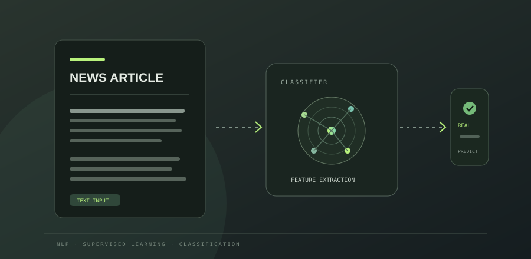
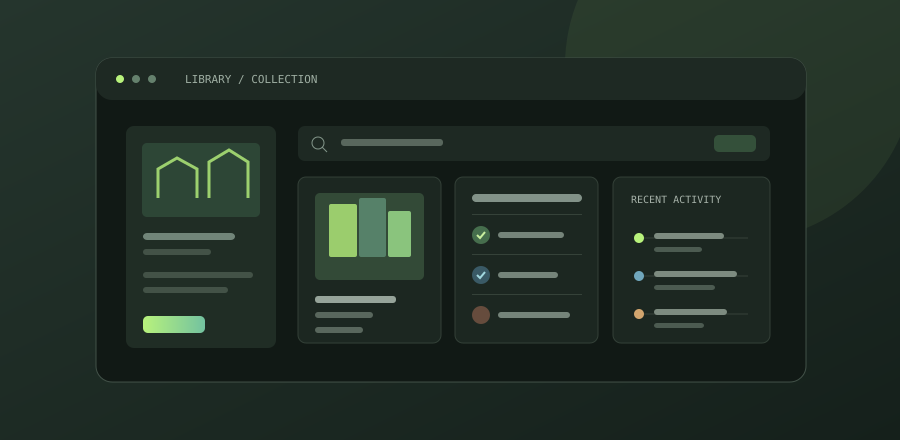

COMPUTER SCIENCE · AI / ML
Hi, I’m Namrata
Bera.
Computer Science & AI/ML Student
Passionate about artificial intelligence, machine learning, software development and building practical technology solutions.
Namrata.kiary@gmail.comKolkata, India
N.LEARN · BUILD · REPEAT
PySQLAI{ }
curiosity → codebuilding with purpose
01 / A LITTLE ABOUT ME
Learning by making
useful things.
I’m a B.Tech Computer Science & Engineering student focused on AI and Machine Learning at Brainware University. I enjoy turning concepts into useful projects, from data-driven models to straightforward web applications.
My current toolkit spans Python, Java, C, SQL and Flask. I’m strengthening my foundations in algorithms and core computer science while exploring how machine learning can solve practical problems.
Let’s connect02 / MY TOOLKIT
Skills I’m growing.
A practical foundation, with plenty more to learn. These are areas I’ve studied or used in coursework and projects.
PROGRAMMING
Languages
COMPUTER SCIENCE
Foundations
AI / ML
Intelligent systems
WEB DEVELOPMENT
Building for the web
03 / SELECTED WORK
Projects with a purpose.

Loan Approval Prediction
A classification web app concept that predicts loan approval from applicant information using Logistic Regression.
GitHub profile Demo link to add

Library Management System
A simple application for organizing book records and member information, tracking availability and managing issue/return transactions.
GitHub profile Demo link to add
Java Chat Application
A client-server chat application concept with real-time communication using socket programming.
GitHub profile Demo link to add
Fake News Detection System
A text classification project exploring NLP preprocessing and supervised learning to distinguish real news from fake news.
GitHub profile Demo link to add
Project descriptions are based on the résumé you provided. Add repository-specific links when the projects are published.
04 / EXPERIENCE
Experience & learning.
INTERNSHIPDATES TO ADD
Deloitte
Role: add internship role
Responsibilities: add verified responsibilities and outcomes. Skills gained: add relevant skills. Add the internship certificate link when available.
CERTIFICATION2026
Data Analytics
Deloitte
Completed a Data Analytics certification, as listed in my résumé.
View certification details05 / EDUCATION
Building a strong foundation.
BU
BACHELOR OF TECHNOLOGY2024 — 2028
Computer Science & Engineering
Artificial Intelligence & Machine Learning
Brainware University · Kolkata, West Bengal, India
9.53Current SGPA / 10
06 / CERTIFICATIONS
Learning beyond the classroom.
D2026
DATA ANALYTICS
Deloitte Data Analytics
Issuer and credential details can be added from the certificate.
Add credential linkMore certificates
Add title, issuer, date and a credential or PDF link when available.
Share an updateA ONE-PAGE INTRODUCTION
Want to know more about my
skills and experience?
07 / GET IN TOUCH
Let’s start a conversation.
Open to internships, early-career opportunities and thoughtful collaboration.